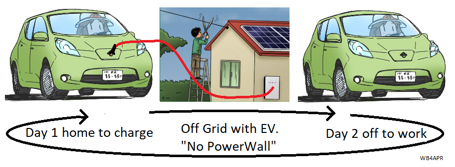
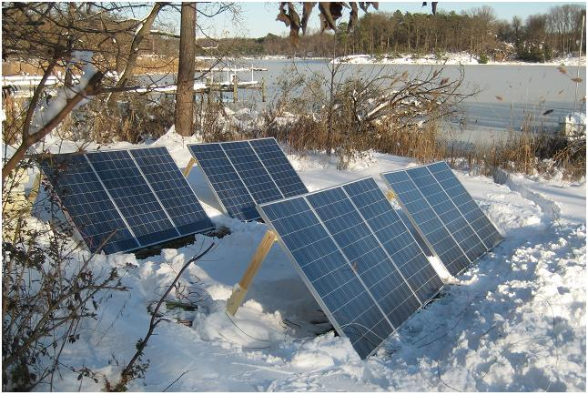
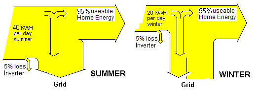
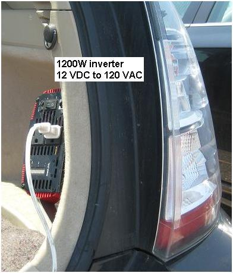
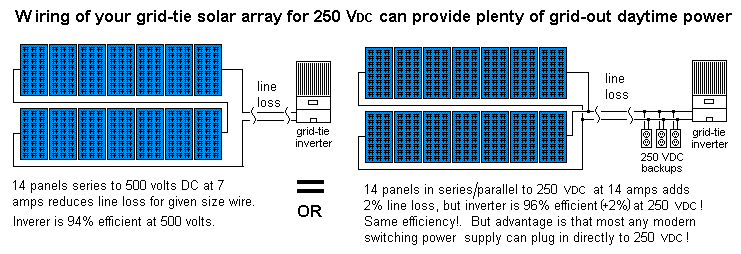
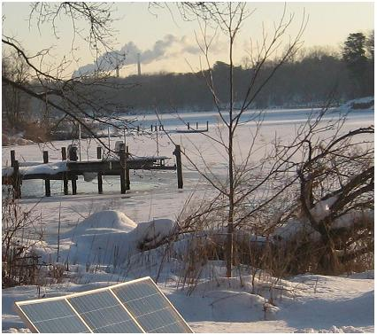
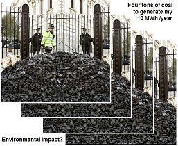

Off-Grid with EV Battery!
Off-Grid with EV Battery!
Off-Grid with EV Battery!
Off-Grid with EV Battery!

The #1 disadvantage of going off-grid is the high cost of the battery and battery maintenance. But with the low price of used EV's, it is now possible to buy a used Nissan Leaf and get the capacity of three Tesla Power walls at a fraction of the price.
OOPS......BUMMER!
Cost Growth: I began this page remembering a few years ago when a 3 year old-like-new off-lease Leaf was going for about $9k. I was shocked just now when a 4 year old Leaf is now going for as high as $20,000 (more than a doubling in value). With modern prices driven so high due to COVID shortages, this idea is not so hot right now.

Off-Grid Idea: Most people know that I preach how very costly going off-grid can be if one has acccess to the grid due to the very high cost of batteries. But this web page began with the idea that a $9k used Leaf would give the equivalent of 3 power walls and solve the off-grid battery cost problem. In fact, the idea was developing for someone with an EV to buy a second Nissan Leaf and alternatively charge it on alternate days as shown above. Thus, there was always an EV to absorb the days solar energy and there was always an EV to drive to work. And you had an off-grid system without the high cost of a Tesla PowerWall.
Getting Power from the Leaf? Of course this idea also assumes there is an easy way to get power from the LEAF for the off-grid house. Charging the battery is not a problem using any off-the-shelf EVSE EV battery charger. But how to draw several kW from the leaf's 400V battery is not a simple DIY project?
But now, the new economics puts this idea on hold until I re-think this...
Using an old Beater: but if you do not plan on driving one leaf on alternate days, then one could get a very beatup-old-Leaf with 80% of battery life remainig for the original $9k or less I began with. Right now I see some 2012's to 2013's for $7k to $11k. But then one is buying into a "used EV battery" of unknown life remaining...
===============================================================================================
THE REST OF THIS PAGE IS JUST CARRYOVER JUNK = AS YET UNEDITED ========= ===============================================================================================
If you have no access to the GRID, off-grid solar is great (and your only choice!)
But if you have the grid and are considering going off-grid or using batteries for any reason, going "off grid" will almost triple the cost of your system due to the need for batteries, annual maintenance occasional replacements and still result in annual lifestyle adjustments. Going grid-tie, however will halve your energy cost and allow full lifestyle all year. please review this page and also join our discussion group.
Some Bad States and EVs for offgrid: Maryland only has a minimum $8/mo electric bill if you generate all your own power. It has no NET-metering connection fee. Some other states can require as much as $100/mo to be NET metered and grid connecrted. In these states it may be worth considering off-grid. Since a huge battery is the bulk of the cost in going off-grid, it might even be cost effective to buy a second EV just to use its battery. And since solar charging is usually during the day when the car is at work, an idea might be to alternate days between the two cars to assure reliability. A battery in a used leaf is three times the size of a Tesla PowerWall and half the cost.
Staying on-grid can give you nearly triple the power for about the same cost and
avoid battery maintenance for the rest of your life. We all want to take advantage of the
tremendous drop in solar panel cost and the significant economic advantage of owning our
own power station (as shown to the right).
This chart shows the 12:1 drop in panel prices over the last decades and 2:1 drop just
last year. The chart also shows the world exponential growth in production of solar PV panels.
The 2010 value of 14,000 MW is not even shown full scale on this chart!
Costs are so low you can now buy a DIY 2.4 kW system from Home Depot for $5500. Thats $2.30 per watt. Installation of solar PV systems will almost double to 56 gigawatts in 2018 from 18 gigawatts in 2010. And DIY'ers with a master electrician friend can install Solar panels for as low as 75 cents per watt in 2015! almost 5 times less!
Here are some other web pages related to my experiences with home solar power:
Do not think the grid is your enemy! It is your economic lifesaver!
OFF-GRID (with Battery storage) Makes No Economic Sense (if you currently have Grid access)! Unless you live in one of the 33 backward states that score a C or worse in their support of solar power. The reason is simple. Modern grid-tie (net-metered) solar systems get 100% efficient and nearly unlimited storage in the grid and require virtually no maintenance for life. On the other hand, Off-grid throws away 30% or more of your solar power in charging/discharging losses as shown to the right. Further, battery systems throw away another 50% of your annual incoming solar power because the battery can't save the excess power in summer for use in the winter when you need it. Finally, the lower production in the winter causes you to give up half your electrical lifestyle for a few months.
Whole House Battery: A whole house battery will eventually be the ideal home energy support system because you can buy grid power cheap and sell it back when they need it at a ten to one profit for a few peak hours a day. BUT NOT NOW because the utilities are not buying back at peak rates. But the good news is that you get a whole howse battery for FREE when you drive a plugin Electric Vehicle. Just the battery in a 3 year old Nissan Leaf cost HALF the cost of a Tesla power wall and has double the capacity, plus you can drive it everyday instead of being stuck on the wall and only used a few hours a year.
See how to use your EV battery to power your house for days or a week

Why does it sound like I am anti-batteries?. . . Because I always thought you had to have batteries as part of any solar system, and there was simply no way I could make the numbers work out for home-solar to be economical (with-batteries). So I wasted several years with this totally incorrect assumption and am now getting into solar a few years later than when it became not only practical, but cost effective with grid-tie. I want to save you from making the wrong assumption too. Forget batteries for Solar storage! (if you have grid access).... Batteries (if you want to buy them) are only for the 0.05% of the time the grid might be out. But like any power outage, a small generator or your car and inverter as described in sections below can much more cost-effectively meet your 0.5% needs.
LESSON #1, Losses: Putting energy in a battery throws away 30% to 40% right off the top in charge and discharge inefficiencies as shown above. If you have access to the grid, it makes no economical sense to give that up! Energy storage in the grid is 100% efficient and virtually unlimited whereas storing energy in batteries is limited and not only throws away 30% of your energy, but also:
LESSON #2, Limited Capacity: Off-grid also throws away all excess solar power once your batteries are fully charged on a good summer day as shown to the right. You either have to waste the excess summer energy or find resourceful seasonal uses. In any case, you then suffer a 50% energy life-style change in the winter. With a battery system there is simply no way to save excess summer energy for winter use. Typically a battery system is sized to hold a few days energy on the worst solar day of the year (December). But the solar power available then is about 1/2 of what you will get in the summer per day.
LESSON #3, Wasted Excess: Even if you invest lots of money in a double sized battery to assure you can capture all the excess solar on a long summer day, you and your family must find a way to use all that extra power that night in order to have battery room for the next day's summer flood of excess solar power. The result is you generally waste excess summer solar power. For comparison, it would take 3240 batteries to save that excess (double) summer solar power for the winter when you need it. (See image). (Actually, there is a perfect system for long term energy storage... and it is called THE GRID)...
 LESSON #4, Grid-Tie Capacity: With grid tie, you basically have an infinite capacity storage system that can save summer excess power and give it back to you in the winter or cloudy days with 100% efficiency. Actually, it is not infinite, it is basically equal to your TOTAL annual energy usage because the power companies expect you to not bank up excess power longer than a year. There are two ways the Utility deals with annual over production. One way if your meter shows a net negative after a full year, the utility will re-establish that as your new annual starting point and cancels any overproduction credit. Some utilities will pay you for the excess but not at the retail rate, but at the 2 cent wholesale rate... Bottom line is to simply not OVERBUILD your array more than you typically use in a year (unless you simply want to help your fellow man).
LESSON #5, Battery Maintenance and Replacement: There is no battery maintenance with Grid-Tie. With batteries, you are burdened with continuous maintenace and periodic battery replacement for the rest of your life!
LESSON #6, Reliability: It is very hard to justify a whole-house battery backup for very rare grid-outages. In most places the grid is up 99.9% of the time and only down maybe 0.1% of the time. The economics of grid solar win-hands-down 99.9% of the time, and for the 0.1% of the time the grid is down, economics suggest that investing in a $500 generator and 5 gallons of gas is by far the more cost effective approach. You can even avoid that with a $100 investment in a 1 kW 12vDC to 115 VAC inverter for your car, and plug your emergency needs (refrigerator, lights, etc) into that. (see how). Do not be sold a $6,000 battery backup addition to your economical grid-tie solar system when there is a $100 solution! See additional sections below.
LESSON #7, Siting Inflexibility: For battery systems, there is only one optimum solar panel orientation, that is, facing due south at an angle equal to your latitude. This is the only way to meet your minimum power needs in the winter. Any off-angle reduces your winter life-style. Being 30 degrees off reduces your power by COS(30) or 13%. But with Grid-tie, the only thing that matters is Annual-Average power. In the winter you can draw as much power you need from the excess that you stored in the summer. See the PVwatts estimate to the right for the 180 South array tilted to 39 degrees for Maryland.
Now, since only annual average counts, it turns out that for any angle off from due south, there is a different sun angle and time of year when that array will produce MORE than a due south arrray and this makes up for it. The annual power from an array to the Southeast (150 degrees shown to the right) or one to the southwest (210 degrees) will only be down by about 3% (not the 13% for an off-grid system). ALso, you can change the TILT angle by as much as 20 degrees (also shown in this table) and only loose about 1% more.
LESSON #8, SREC's: With battery systems you do not get paid annual Solar Renewable Energy Credits. These credits in Maryland amount to a $300 per year cash payment for each installed KW of grid-tied solar power. For an 8 kW system, this is a $2400 annual cash payment simply for being part of your state's solar energy system. Even if you produce no net excess power you still had to pay $10/ month for your on-grid account. But this SREC income makes up for your billing costs by 20 to one! This year, SREC's in NJ were $600/kw making for nearly a $4800 income per year and reducing system payback time to 4 years or so!!!
LESSON #9 No Choice: Off grid is for when you have no choice: and must generate and store your own power... or it is cost prohibitive to run the grid to your house (now that most utilities pass that cost directly to the user...)... In those cases, Solar power with Battery storage is the only way to go! It is great. (But so much better if you have the grid!)
LESSON #10, Wheels!: If you reallly insist on buying a $10,000 whole house battery backup system (to store only $1 worth of electricity a day), then buy a 3 year old used Leaf EV for $8,000 and get the same battery capacity as THREE Tesla Power walls costing 3 times as much. Plus, instead of the Tesla Power wall sitting in the basement doing nothing for 99.9% of the year, you can drive the EV for that 99.9% of the time instead!
If you do still choose to go off grid, recognize you will be paying a HUGE penalty:
AMAZING ROOF ANGLES: Grid-Tie solar is a huge paradigm shift in conventional thinking about solar power. South is dead. With grid tie, there is hardly any real requirement at most latitudes to worry about exact roof facing. The number-1 consideration is Trees and shading! Those have far more impact than roof facing. It turns out that having an EAST/WEST facing house can produce more grid-tie power than a south facing one!. See why.
. . .
In the image above left, is the the classic south facing roof. Yes, it produces the maximum power as one would expect at a 40 degree tilt for a 40 degree latitude house. But for the more typical roof tilt of say 20 degrees, the penalty to the grid-tie homeowner is only 2%. Further, if you rotate the house to the southeast, only 5% energy is lost. Even if facing due East, the 20 degree grid-tie roof can still produce 85% of the total annual energy as the ideal Southern array.
Whole Roof! But wait, there is more! If EAST can produce 85% of what South can do, then covering the WEST roof can produce 170% of what South can do. Amazing... But wait, there's more... Lets look at the Southeast facing roof. The sun sets in the North West in the summer and so lets double the array on to the Northwest roof... Wow, almost the same output as the East-West array... OK, why not try the NORTH facing roof as shown on the right. Yes, this northern roof will not generate any power during the winter solstice, but all the rest of the year and especially during the summer, it will produce 60% of what the South face will produce. If your southern roof is full and you need more solar, then do not overlook the 60% imporvment you can get by putting solar panels on the North side!

 Emergency Backup Power: And please think through the cost of whole-house backup
batteires considering the 0.1% of the time when
the grid goes out and you need backup power.
For power backup in the rare blackout a few hours every year
or the bad day or so every decade or so, simply use a small generator or
your car generator and an inverter.
See some of this on my Prius Power web page.
Emergency Backup Power: And please think through the cost of whole-house backup
batteires considering the 0.1% of the time when
the grid goes out and you need backup power.
For power backup in the rare blackout a few hours every year
or the bad day or so every decade or so, simply use a small generator or
your car generator and an inverter.
See some of this on my Prius Power web page.
Grid-out 250 VDC Backup Power: Just because the grid goes out and the grid-tie inverter safely shuts down to protect linemen, your array still produces electricity (DC), you just need to figuire a way to use it. The key, is to realize that almost all modern power systems use switching regulators and high frequency power conditioning. This means that most of them will run directly on 250 to 330 VDC just as easy as they will run on 100 to 240 VAC beacuse internally, the first stage is simply a DC rectifier. All voltage conversion and regulation is done from high voltage DC.
So instead of wiring your grid-tie array for 500 VDC to minimize wire loss, wire them in series parallel to about 250 to 330 VDC so that you can use this power directly if needed. Just about any system that has a nameplate showing it is good for 100 to 240 VAC will work on 150 to 330 VDC too! And almost all modern electronic systems come that way! See more details. But most appliances and lights are a problem. You CANNOT wire two CFL bulbs in series to equal 250 VDC, they are unstable and one will take all the voltage and burn out instantly. But you can series two incandescents of the same wattage, or you can special order special 220 volt CFL bulbs normaly sold in Europe. But you will pay 10 times their value. I'm looking for surplus LED christmas light strings! Large LED bulbs are ideal beacuse they run on 100 to 250 volts AC or DC but cost a king's ransom ($50 each). See the diagram below:

NET METERING: Of course, all the benefits of grid-tie solar depends on having NET METERING in your area. Meaning that all energy you put into the grid you can get back out for free. Net Metering is the case in most energy conscious states. The white ones to the right apparently are the backwards ones. Eventually they will wake up to the benefit for all. All the world is going solar. If your backwards county is not moving in that direction, get involved and get them motivated. It is a win-win for both the homeowner AND the utility company, so there is no chance Net-Metering will ever go away.
Off-grid battery systems are ideal for small remote communications and electronic systems on mountain tops or remote areas where the load is constant year-round (and it is the only possible solution). But it makes no economic sense whatsoever in a place where there is access to the grid.
Keep your grid! (if you have it). Yes, you will have a $10/month metering fee even if you use zero net power, but not only is that a trivial cost to pay to gain more than TWICE the power from your SOLAR investment and to avoid messing with batteries for the rest of your life and replacing them every 5 years. But you will get PAID an annual Solar Renewable Energy Credit from the power company that will more than make up for the metering charge! For each 1 kW of solar panels, you get an annual payment of $200 to $300 that much more than makes up for your monthly meter charge. For my 8 kW system, that is $1600 to $2400 a year! Plus you are HELPING your community!
Grid-Tie energy economics: Here is why the (clear thinking) utilities love grid-tie. When you produce an excess 1 kW in the summer back into the grid, it really goes no farther back into the grid than the nearest 1kW load (your neighbor!). Now your power company still gets to charge your neighbor for the 1kw, but does not now have to generate 2kW worth of electricity at the generator to make up for the distribution losses. And in avoiding generating 2 kW of power, they save more than 4 kW energy equivalent in coal that they can save for later. Often times, the utility might have to pay 10 to 20 times the normal rate of electricity from peaking-plants to meet peak demand. Grid-tie solar in that case is worth 10 to 20 times its value!
PROBLEMATIC CASE WITH RURAL COOPS: Someone told me their coop has a basic $50 monthly fee just for grid-access even if you use no net energy. In the old days, this made sense. Everyone has to pay for the basic infrastructure. But with grid-tie, everyone wins. The consumer wins by getting good return on his solar investment, the coop wins because they get distributed power from their solar customers IN the rural area where it is used, and it avoids burning twice as much primary energy (coal) to deliver the same power to the loads. It also saves them on added distribution capacity and finally, it avoids them having to purchase PEAK electric rates since solar is producing the most when everyone else is running their Air conditioners.
In effect, coops should be enthusiastic about grid-tie since it is a significant benefit to them as well as their customers. On the other hand, if coops do not wake up and realize that their preditory pricing disincentivizes solar, they will end up forcing their customers off-grid leaving them holding a huge infrastructure with less and less paying customers to support it. If you are in one of these backward-thinking coop areas, write them, your county, your state, and your congressmen. Educate them.
Home Owner Associations? Regarding prohibitive covenants, HOA's in Virginia in existance before 1 July 2008 may maintain their prohibition against solar panels. "Timehourse" reports it takes an 80% HOA vote to reverse this. Reference 67-701 of the Virginia Code, Section C.
Pollution to Produce Solar? The final argument by the nay-sayers is that it takes coal burning electricity to make the solar panels. True, but that applies to everything we do on the planet in our jobs and manufacturiing. If Coal electricity is used to produce a panel, then the emissions to manufacture are break-even with the clean energy produced in 1 to 3 years. For a service life of 30 years, this environmental benefit is 10 to 30 times the environmental cost. If the MFR's weren't making solar panels, would you rather their factories be making more big-screen TV's and hot tubs and still polluting in the process? (reference). Plus this only goes up as more and more of our electrical power comes from solar.
SHACK POWER?. I share the above with you, because my own backward thinking about batteries caused me to avoid the cost of solar for years, when in fact, the only thing that made the system uneconomical was the batteries and a lack of understanding of the benefits of Grid-tie (if you have it). However, like any Ham, it is also prudent to have a small solar backup and battery for your HAM Shack communications needs as shown below. In this case, simply adding one of the small micro-grid-tie inverters to your shack will allow you to not waste your solar power once your shack battery is full. The micro-grid-tie can provide about 250 watts of AC current to your permanent shack loads to lower the consumption of power from the grid when the sun is shining. For one 200 Watt panel, these nickel's per day of excess power will add up to $30 or more a year in saved energy.
HALVE YOUR GRID-TIE INVERTER INVESTMENT: If you are really scraping pennies together on your solar system and have a partially shaded lot that does not have enough room for a full set of solar panels, you might consider pointing half of them southeast and half of them southwest. ALthough intitially this means you only get about half the power from all your panels, you are actually getting that half power for almost twice as long during the day. See the image below:
As shown above left, in the summer, the sun rises in the NE and sets in the NW and a southern facing panel actually does not get any of the first and last hours of sun per day. But if you split half of your panels SE and SW, you can get more sun for longer. An advantage of this approach is that you only need about 70% of the grid-tie inverter capacity, because you spread out the power over time. You can get buy with investing in only half the total inverter cost if you have some shadowing that blocks enough of the full sun on both panels slightly before and afternoon to the diret south.
A good candidate for this approach is someone without a good low southern horizon, but that does have good low horizon to the SE and SW. Such a site is going to produce little power in the winter anyway because of the low horizon blockage. Splitting the panels might be a net gain (with half the cost for inverters)...
BUT IS GRID-TIE-FOR YOU?: Now, grid-tie is great but there are a few other points that need to be made. And that is, there are about 4 ways to hook up a grid-tie system. I will address the issues with each one:
Out0of-the-box-test: I just got one of these and on my first test, with a pair of 12v batteries (24Vdc) the inverter was drawing 4 amps (96 watts DC) and on the AC side, I was measuring almost 810 mA at 119 VAC indicating almost 100% efficiency (my shunt resistor was 5% tolerance, so the inverter was at least meeting its 95% efficiency spec. At least there was no smoke.
Look at the drawing above on Halving your Grid-tie Inverter Investment. You can use that concept to double your savings while still keeping below the backfeed ZERO threshold. Say you have about 200 watts of insidious constant load in your house. Then you do not want more than 200W of solar panels (at a time). But you can still double your savings by pointing one 200W panel East and another West so that only one is illuminated at a time. This way you do not exceed the insidious load, but you get to cancel the 200 watt load for twice as long. The hard part is figuring out what your lowest daytime not-at-home load is
Anyway, just some thoughts.
Bob, WB4APR
You can see more about my spiritual awakening about solar on my other energy web page links near the top of this page.
The rest of this page has not yet been edited out and is just some old stuff on other pages.
solar augmented Salvage Prius, And there is another page on using the Prius for emergency field power, See my nearly born-again (powerpoint) conversion to a Solar Junkie in August 2009!
 POLLUTING ALTERNATIVES: If you look carefully in the photo at right, you will see the smokestacks of the 500 MegaWatt A.H. Wagner coal-fired generator plant just 4 miles down the creek. By my calculations, just my home alone consumes about 10 MegaWattHours (MWH) of electricity per year. I hope to generate my own solar 10 MWH to eliminate completely my share of the pollution from that plant which amounts to:
22,000 lbs of Carbon Dioxide
350 lbs of sulfur dioxide
1 ounce of Uranium and Thorium
.00004 ounce of Mercury
All of this pollution that I am responsible for is falling on the nearby Chesapeake Bay and watershed and my creek. Yet, I want to eliminate my contribution to this pollution by installing my 8 kW clean-solar system which will just about break even by producing my own annual 10 MWH's of clean-renewable-energy. So, at my own expense, I am offering to clean up the Bay by having solar panels on my pier, but am blocked by an outdated and short-sighted law of the Maryland Department of the Environment who are charged with protecting not just the water under my pier, but the air above and the soil beneath.
Plan-B Solar-in-Yard: 21 Dec 2010 - So, after 9 months and $2000 of fees, the MDE's denial of panels on piers still stands. So I designed the panels to sit on the only sunny part of my lawn down by the water.... Don't be fooled by the winter image above. My roof is more than 50% shaded throughout all times of the day and most months of the year. So we submitted for a building permit in September 2010 only to be immediately DISAPPROVED! Maryland does not allow anything to be built within 100' of the shoreline. So, with additional fees, I applied for a Variance. On 21 December 2010 I appeared before the Hearing Officer and presented my case. Here are some of the materials I used:
 .
.

 Environmental Benefits of Solar: The above two images show the pollution-elimmination impact of my solar project. Each 3'x5' panel eliminates about the same amount of pollutants in a year as about 8 mature trees remove in a year. This means my 42 panel array is equivalent to the environmental benefits of about 300 trees compared to coal. But even more telling is to look at not just the pollution impact of coal electricity, but also the sheer magnitude of environmental distruction.
 Unseen Impact of Coal Electricity:
In the image to the far right are 4 tons of coal which is about the energy equivalent of the
10 MHhrs of energy our house requires per year. Not only do we energy-consuming-&-wasteful
Americans not see this tonnage, we also do not see the 80 tons of trees, topsoil, habitat
and dirt that has to be pushed off a mountain top in West Virginia and into the nearby
valleys and streams just to get to that coal. This 80 tons of decimation of the environment
PER YEAR for my one house is shown in the near image to the right which shows four 20 ton freight
cars needed to move that debris. The next image below right is just one of the hundreds
of mountains and habitat in West Virginia being destroyed for our coal energy addiction...
Folks, this approach to our environment IS NOT SUSTAINABLE!
Unseen Impact of Coal Electricity:
In the image to the far right are 4 tons of coal which is about the energy equivalent of the
10 MHhrs of energy our house requires per year. Not only do we energy-consuming-&-wasteful
Americans not see this tonnage, we also do not see the 80 tons of trees, topsoil, habitat
and dirt that has to be pushed off a mountain top in West Virginia and into the nearby
valleys and streams just to get to that coal. This 80 tons of decimation of the environment
PER YEAR for my one house is shown in the near image to the right which shows four 20 ton freight
cars needed to move that debris. The next image below right is just one of the hundreds
of mountains and habitat in West Virginia being destroyed for our coal energy addiction...
Folks, this approach to our environment IS NOT SUSTAINABLE!
 Variance Issues: With the proponderance of benefits of my solar project
in my front yard, the County did agree that the varance was appropriate, but with one big
catch-22 provision. They requested that there be the standard mitigation for any variance in the
100' foot critical area buffer. This means that the disturbance in the
buffer area (690 square feet) must be offset with 3-to-1 or 2000 square feet of new
trees. In otherwords, I can have the solar panels, but I have to plant so many
trees in compensation that my lawn becomes a forest and we are back to square-ONE,
that is, no solar access!
Variance Issues: With the proponderance of benefits of my solar project
in my front yard, the County did agree that the varance was appropriate, but with one big
catch-22 provision. They requested that there be the standard mitigation for any variance in the
100' foot critical area buffer. This means that the disturbance in the
buffer area (690 square feet) must be offset with 3-to-1 or 2000 square feet of new
trees. In otherwords, I can have the solar panels, but I have to plant so many
trees in compensation that my lawn becomes a forest and we are back to square-ONE,
that is, no solar access!
The Hearing Judge has 30 days to make a ruling. He did! In our favor! Now the building permit has been submitted and then we will probably have to do battle with their requiements for disturbance mitigation. We will see if sanity prevails.
SOLAR PRIUS:
My first alternative energy project was my Solar Plug-in Hybrid Electric Vehicle (PHEV) I built from a salvage Prius.. It had been totaled on the drivers side, but I just beat it out with a sledge hammer and coverd the bashed-in door with the white sign! This soon morphed into my Prius Field-Day Power project to combine high power solar, with thousands of watts of backup gasoline driven generator power in the Prius for providing emergency power for field operating events such as the annual Amateur Radio Field Day or Scouting events shown below.
 .
.
.
.
PRIUS POWER: The Prius is a power station on wheels. It has a 12 volt electrical system for normal car accessories, and a 220 Volt 7 Amp-Hour Battery for propulsion assistance, two 50 kW motor-generators, a 50 Kw DC/DC converter/inverter, and a 76 Hp gas engine all integrated into a seamless power system. See more on my Solar Plug-in Prius
115 VAC Power: is provided by a 1200 Watt AC inverter running on the car's 12 volt power system (shown in the right photo above). This 1200 watts drawn from teh car's 12 volt system is augmented by the 100 Amp DC/DC converter from the car's propulsion batteries and generators.
SOLAR-POWER: . Adding solar panels to the Prius not only provides free energy to offset the cost of gas a few percent, but also to provide an effective application for solar power in other places where you might need it. The solar panels shown here can provide as much as 215 peak Watts of power good for about 1.7 KWh of free electricity when parked for 8 hours in Arizona sun. (unfortunately, only 800 Wh in Maryland Sun). Solar Power portability gives peace-of-mind where there is no gas or plug-in electricity available. . (more on my Solar Prius)...

When you can take solar power where you need it, then its value can be far greater
than 15 cents per KWH and is cheap at any price. .
Just consuming it in the Prius is an equivalent
payback of 30 cents per KWH compared to the 15 cents at home. . Plus it reduces
dependency on foreign oil! . A 1200 Watt AC inverter in the back (see photo above)
provides plenty of AC power to go.
Emergency Solar Power Trailer: I had a few extra low voltage solar panels so I put them on the solar trailer to the right. It contains about 300 watts of solar panels plus a deep cycle marine battery and 1200 Watt inverter. The top wood section of the trailer folds over to not only protect the solar panels during travel but to also hide them out of sight when parked or not in use. When closed, the top wood section looks like an open top trailer with about 6 inch sides. The false bottom conceals the nested solar panels.

In addition, when open, the bottom set of panels are also hinged to give access to the battery and inverter below. Plus this area provides hidden storage for extra power cords, cables and accessories. (see picture)

220 VDC POWER CONNECTORS: . One of the first issues with distributing 220 VDC power is finding a safe connector that is innexpensive and readily available yet, cannot be confused with any other electrical connector. . This connector must be unique to prevent anyone from plugging in any non 220 VDC device. . The connector we came up with was a standard two-prong power plug but with two PREVENTION devices to prevent inadvertant plugging in of other devices. The connector is shown above right.
A standard two-prong socket is used, but without the usual 3rd ground pin. . This blocks the use of any 3 wire 115 VAC power cord. . In addition, a 3/16ths inch nylon protrusion is fixed to the center of this receptical inbetween the two prongs. . This blocks the use of any 2-wire 115 VAC devices. . To make a mating two prong plug, a standard replacement plug is used but the center is drilled out to pass this blocking pin as shown in the photo. . On the right, this center pin protrudes into an unused, and isolated area of the hard plastic plug construction. . These connectors cost under $2 each for both the plug and the receptical.

Lightweight Power Cords: . Because of the much lower current demand at 220 VDC, a #18 zip cord can easily carry plenty of power over hundreds of feet. . In the photo to the right, the original 25 feet of large orange extension cord were removed and about 120 feet of #18 lamp cord will fit on this convenient spool system. . The current carrying capacity of #18 is as high as 10 amps, but I limit mine by fuses to only 5 Amps. . Again, the outlets are blocked from any inadvertant use by the uninformed by the dual protection-blocking system. . Only switching power supplies or other loads that can operate on 220 VDC are provided with these matching plugs.
(YOUR MILEAGE MAY VARY!)...
Bottom line: . The time is now to go solar! We cannot continue to send
billions of dollars a day overseas to buy polluting oil for our energy needs
when it is right there outside our door. Also think in terms of your total
energy footprint and consider how to integrate your transpotrtation demands
into your own home solar system and energy needs.
Bob Bruninga, WB4APR,
.
See Sitemap to over 450 of Bob's othe web pages.
.
{kind=link}
{kind=link}
{kind=link}
{kind=link}